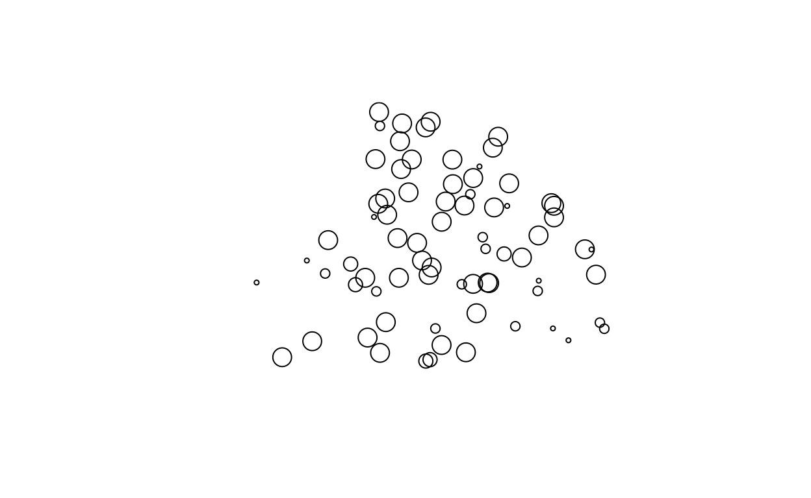

Welcome
This is part of a series of introductory tutorials to work with geo-spatial data in R. I prepared these tutorials as a intuitive “hands on” introduction, but I provide links for those interested in more background and theory.
In this tutorial, you will follow some steps to read spatial data in
vector format with package sf (simple features), estimate
the spatial correlation of variables associated with these points and
use a semivariogram model to apply spatial interpolation following the
indicator kriging approach.
Setup
I’ve preloaded the packages for this tutorial with
library(sf)
library(gstat)
library(ggplot2)
library(raster)For this tutorial we will read spatial objects from a
file. This file is preloaded in this learnr
tutorial, but if you want to replicate this steps in an R session, you
need to locate the original file in the data folder of the parent
repository. For example, using package here:
here::i_am("workshop/tutorial-4/tutorial-4-geostatistic-example.Rmd")
data_folder <- here::here("data")
# Check if file exists at data folder
file.exists(here::here(data_folder, "JBM-points.csv"))
file.exists(here::here(data_folder, "JBM.gpkg"))Understanding the data
Our team is studying if the activity of a frog species in related to vegetation characteristics in a botanical garden (we will call it JBM for short). They use a paper map of the garden and write down coordinates of each sampling point where they describe characteristics of the vegetation at these points (leaf litter, tree cover, etc).
One particular frog is almost always present when tree cover is high and always absent when it is low. Using the sample of tree cover values they want to create a map of probability of finding the frog (Ferrer-Paris et al. 2015).
Reading the data
We will read one version of the data with simple spatial data.
data_jbm <- read_sf(here::here(data_folder, "JBM-points-no-crs.gpkg"))The spatial coordinates are relative to an arbitrary point within the botanical garden, and the Coordinate Reference System is undefined with meter units.
st_crs(data_jbm)## Coordinate Reference System:
## User input: Undefined Cartesian SRS
## wkt:
## ENGCRS["Undefined Cartesian SRS",
## EDATUM[""],
## CS[Cartesian,2],
## AXIS["(E)",east,
## ORDER[1],
## LENGTHUNIT["Meter",1]],
## AXIS["(N)",north,
## ORDER[2],
## LENGTHUNIT["Meter",1]]]This undefined CRS can be a problem with some functions, so we will need to set the CRS information to NA so that it can be ignored by those functions:
st_crs(data_jbm) = NAData and geometries
The data has several columns with ordinal variables coded as numeric (from 0 to 4), and then one special column for the spatial geometry.
print(data_jbm)Tree cover
We will focus on one variable Tree cover and we want to
see how are the low and high values distributed in the area of
study.
Let’s first look at the distribution of values
table(data_jbm$`Tree cover`)Spatial properties: extent
The spatial information is also important for this analysis. In order to understand the data better we want to explore its spatial properties. What is the spatial extent? what is the distance between sampling points?
We will look first at the extent. We can get the bounding box of the
simple feature object using st_bbox:
st_bbox(data_jbm)## xmin ymin xmax ymax
## 158.0040 359.8077 685.1595 738.1492To get the area, we can compare the values of xmin and xmax and the
values of ymin and ymax. All points are included in a rectangle of
roughly 500 m by 400m (200000 \(m^2\)).
We can alternatively transform the bounding box into an spatial object
and use st_area to get a more precise estimate of area.
data_jbm_bbox <- st_as_sfc(st_bbox(data_jbm))
st_area(data_jbm_bbox)The output lacks units because we removed the CRS before this calculation, but we know the coordinates are in meters.
Spatial operations: Nearest neighbour distance
To get a sense of how are the points spaced from one another, we can calculate a distance matrix:
distance_matrix <- st_distance(data_jbm)
str(distance_matrix)## num [1:74, 1:74] 0 247 191 255 500 ...
## - attr(*, "dimnames")=List of 2
## ..$ : chr [1:74] "1" "2" "3" "4" ...
## ..$ : chr [1:74] "1" "2" "3" "4" ...From this distance matrix we want to look at nearest neighbours
distance (how far is the nearest point?). We can use apply
to calculate a function (FUN) to each row
(MARGIN=1), for example:
min_distances <- apply(distance_matrix, MARGIN = 1, FUN = min)
summary(min_distances)## Min. 1st Qu. Median Mean 3rd Qu. Max.
## 0 0 0 0 0 0What is wrong with this? The distance matrix includes distance between each point and all other points including itself. Thus all distance matrices have a diagonal of zero values. How can we modify the function to ignore the zero values and return the second lowest value of distances? What is the minimum distance between points?, what is the maximum?
min_distances <- apply(distance_matrix, MARGIN = 1, FUN = ____)
summary(min_distances)min_distances <- apply(distance_matrix, MARGIN = 1, FUN = function(x) min(x[x>0]))
summary(min_distances)Hint: You can define your own function
function(x) {...}. You can calculate the minimum of
non-zero values with min(x[x>0]). Alternatively you
could replace the diagonal of the distance matrix with NAs and use
min(x, rm.na=TRUE).
Spatial operations: Full distance matrix
For spatial interpolation the distance between all pairs of points is important. A well sampled area will have a wide spread of distance between the minimum (0 meters) and the extent of the bounding box (400 to 500m). So let’s do this!
We want to remove duplicates and the diagonal of zero values, so we focus on the lower triangle of the matrix and calculate a summary or plot the histogram of distances. Uncomment the lines and run the code to see either the summary or the histogram (or both?):
distance_matrix <- st_distance(data_jbm)
distances <- distance_matrix[lower.tri(distance_matrix)]
# summary(distances)
# hist(distances, breaks = seq(0, 600, by = 20))How many pairs of points are there with distances below 100m?, how many have distances above 300?
One step done…
So far we have
- read our data using package
sf
We are just getting started, let’s keep going!
Visualising the data
Extract the coordinates
We can extract the coordinates of an sf object by using
st_coordinates. We get a two column matrix.
xys <- st_coordinates(data_jbm)
head(xys)We can use this matrix in ggplot and apply an appropriate
geom_* function from the ggplot package:
ggplot(data_jbm) +
geom_point(
aes(
x = xys[, 1],
y = xys[, 2],
size = `Tree cover`,
colour = `Tree cover`
)
) Have you met geom_sf?
That is fine, but kind of cumbersome way to plot the data. Actually
there is a special geom_sf that will handle the coordinates
automatically. Try this yourself and compare both plots, do you see any
differences in the output?
ggplot(data_jbm) +
geom_sf(aes(
size=`Tree cover`,
colour=`Tree cover`)
) The plot shows that most of the area has high values of tree cover (values of 3 or 4), but there are some pockets with clusters of low values (1 or 2).
This looks good!
So far we have
- read our data using package
sf - used
ggplot2for visualising one variable
But we want to quantify the spatial autocorrelation of the data and try to make a spatial prediction for this variable. Let’s figure out how to do this in the next steps!
Spatial auto-correlation
Spatial auto-correlation is a measure of how similar
are observations that are close together. Here we use a
semivariogram to describe this autocorrelation. We use
functions from the gstats package.
Empirical variogram
An empirical semivariogram for a spatial dataset is calculated by grouping pairs of data within bins of similar distance and then calculating their variance.
Here, we first create an indicator variable \(Z\) that represents high values of Tree cover:
\[ Z=\begin{cases} 1, & \text{if $\mathrm{Tree\ cover}>2$}.\\ 0, & \text{otherwise}. \end{cases} \]
In R we can run this:
data_jbm$Z <- data_jbm$`Tree cover` > 2Now we apply the variogram function in the
gstats package using a formula as first argument, and the
data as the second argument:
empirical_variogram <- variogram(Z ~ 1, data_jbm)
empirical_variogramRemember the histogram of distances we had before? Now we added
information on how similar are records from pairs in different distance
bins. So, for example 64 pairs of points (column np) are
located at a mean distance of 50.66m apart (column dist),
and have a variance of 0.179 (column gamma).
At what distance are the minimum and maximum values of gamma?
The default plot for this empirical variagram shows the semi-variance
(gamma) as a function of distance (dist).
plot(empirical_variogram)Variogram model
A variogram model is a convenient way to summarise the relationship between distance and semi-variance.
We use here an exponential model and use some starting values for the parameters of the model:
variogram_model <- fit.variogram(empirical_variogram,
vgm(1, "Exp", 25, .20))You can check the estimated or fitted parameter values for this model, run this code and check the output:
variogram_modelAnd this translate to a fitted line for our semi-variogram plot, run this chunk and watch the resulting plot, is this a good summary of the empirical data?
plot(empirical_variogram, variogram_model)Just mastered spatial auto-correlation!
So far we have
- read our data using package
sf - used
ggplot2for visualising one variable - used
gstatfunctions for fitting a variogram model
Now we are almost ready to make a spatial prediction, but first let’s create a raster mask!
Create a grid for spatial prediction
We read the JBM boundary file from our data folder:
boundary_jbm <- read_sf(here::here(data_folder, "JBM-boundary-no-crs.gpkg"))First we create an empty raster using functions from package
raster.
rnull <- raster(extent(boundary_jbm),
nrows=18, ncols=24,
crs=st_crs(boundary_jbm)$proj4string)Then we transform this to a mask by assigning a value of 1 for cells
within 50 meters of a sampling point. We use the function
distanceFromPoints.
mask <- distanceFromPoints(rnull, data_jbm)<50Finally, we create a Spatial Pixels Data Frame for the spatial
prediction. The package gstat uses this format inherited
from the old sp package.
ss <- values(mask)==1
prd.grd <- SpatialPixelsDataFrame(
points=xyFromCell(mask,1:ncell(mask))[ss,],
data=data.frame(values(mask)[ss]),
proj4string=CRS(st_crs(boundary_jbm)$proj4string))Visualise the mask
We can use the plot function to visualise the mask:
plot(prd.grd, main = "Mask")But what if we want to compare the mask to the distribution of values
of ‘Tree cover’? We can split the spatial information from the data to
plot points with sizes proportional to the variable. First we use
st_geometry to get the spatial information (point
locations), and then use pull to extract one variable from
the data frame, and use them in the plot function in this way:
xys <- st_geometry(data_jbm)
tree_cover <- pull(data_jbm,"Tree cover")
plot(xys, cex = tree_cover/2)
Now, we will use this trick to plot points and mask together, run this chunk to visualise the result:
plot(prd.grd, main = "Mask")
xys <- st_geometry(data_jbm)
tree_cover <- pull(data_jbm, "Tree cover")
plot(xys, cex = tree_cover/2, add=TRUE)From vector to raster!
Awesome! So far we have:
- read our data using package
sf - used
ggplot2for visualising one variable - used
gstatfunctions for fitting a variogram model - used
rasterand legacyspfunctions to create a spatial grid for prediction
Here comes the fun part: spatial prediction with kriging.
Kriging
In Geostatistics the term Kriging is used for a family of models that minimise the spatial error and can be used for spatial interpolation and prediction. Here we use Indicator kriging to interpolate the probability of \(Z = \mathrm{Tree\ cover} > 2\) from out measurement points into a regular grid.
Function krige is a simple wrapper method around other
functions in the gstat package for univariate kriging
prediction and conditional simulation methods. See the help pages of the
functions gstat and predict for more
details.
Now, all of our previous steps come together:
ik <- krige(Z ~ 1, # our target variable
as_Spatial(data_jbm), # our spatial data
prd.grd, # the regular grid for prediction
variogram_model) # the spatial autocorrelation## [using ordinary kriging]Run this chunk of code to look at the structure of the output object
using the function str:
str(ik)This class of objects come from the deprecated sp
package, and the different slots (symbolised by the @) show
different component of the object.
The @data slot includes two variables: the spatial
prediction (var1.pred) and the variance of the prediction
(var1.var)
Visualise the prediction
We will use the plot function to visualise the
prediction of probabilities of \(Z =
\mathrm{Tree cover}>2\) and the observed values of
Tree cover in one plot.
plot(ik["var1.pred"],
col = rev(terrain.colors(n = 30)),
main = "Indicator kriging predictions for Tree Cover > 2")
xys <- st_geometry(data_jbm)
tree_cover <- pull(data_jbm, "Tree cover")
plot(xys, cex = tree_cover / 2, add = TRUE)Visualise the variance
You can think of kriging as a sophisticated form of spatial interpolation. As such, the predictions should match existing observations, and the variance at these points should be minimal. Let’s compare the prediction with the observed values:
plot(ik["var1.var"],
col = heat.colors(n = 30),
main = "Indicator kriging variance for Tree Cover > 2")
xys <- st_geometry(data_jbm)
tree_cover <- pull(data_jbm, "Tree cover")
plot(xys, cex = tree_cover / 2, add = TRUE)That’s it for this tutorial!
Good job!
We learned to:
- read our data using package
sf - used
ggplot2for visualising one variable - used
gstatfunctions for fitting a variogram model - used
rasterand legacyspfunctions to create a spatial grid for prediction - used
gstatfunctions for spatial prediction (kriging)
I hope this has been useful and you feel more confident to start working with geo-spatial data in R.
What is next?
Check other tutorials in this workshop at the UNSW codeRs’ geospatial-data repository or in the following links:
- Create a spatial object (using
sf,mapview)
- Points, lines and polygons (using
sf,mapview)
- Thematic mapping (using
sf,tmap)
- Geostatistic analysis (using
sf,sp,raster,gstat)
- work in progress
- Accessing vector and raster data (using
sf,terra,leaflet)
References
The data for this tutorial comes from: